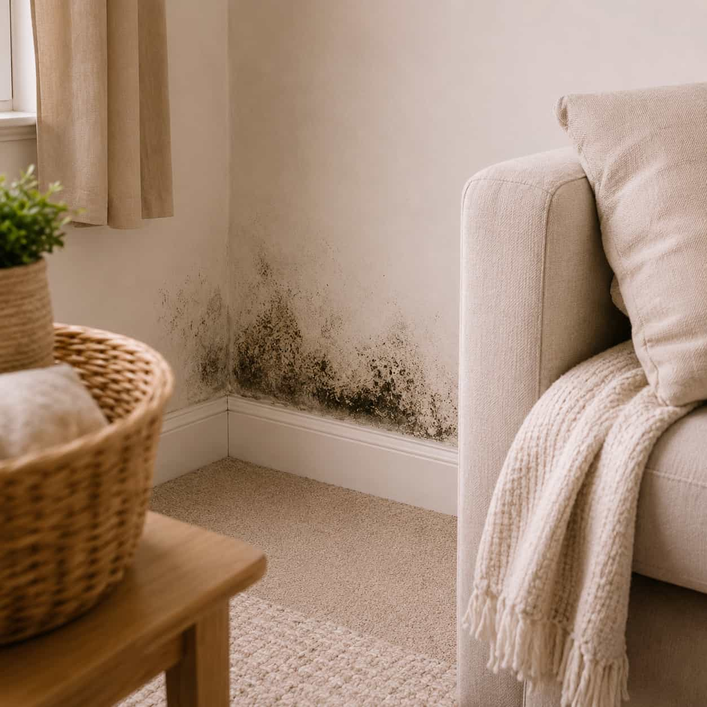

Moisture concerns should be described carefully, without assumptions, so homeowners can compare provider options and ask the right questions.

Request explanation
Describe visible moisture signs before comparing options.
Moisture and possible mold-related requests may involve damp odors, visible stains, humidity concerns, soft surfaces, discoloration, or moisture spots after a leak or water event. DryHouse Match helps homeowners submit request details and compare available local provider options without making diagnostic or medical claims.
- Visible stains or suspicious marks
- Damp smells or humidity concerns
- Moisture spots after water events
- No diagnostic or medical claims
Category fit guide
Is active leak the right request path?
Use this path when water appears to be entering, dripping, spreading, or showing up near ceilings, walls, fixtures, pipes, appliances, or roof-adjacent areas.
Compare all categories
Use this path when
-
01
Water is currently dripping, entering, or spreading inside the home.
-
02
Ceiling, wall, flooring, or surface marks appear to be growing.
-
03
Water appears near a pipe, fixture, appliance, or roof-adjacent area.
Choose another path when
-
01
Water is already standing across the floor — review Standing Water Cleanup.
-
02
The concern is mainly basement seepage — review Flooded Basement.
-
03
The issue is only odor, stains, or humidity — review Moisture & Mold Concerns.
Provider comparison factors
What to compare for moisture concerns.
When reviewing provider options, homeowners may want to ask about service area, inspection or testing approach, pricing, documentation, licensing, insurance, limitations, warranties, and final service terms. DryHouse Match does not verify, diagnose, test, or confirm mold.
Request details
Describe what you can see or smell.
Include where stains, damp odors, humidity concerns, or moisture spots are noticed, and whether a leak, flood, storm, or plumbing event happened recently.

Provider discussion
Ask about process and limits.
Ask participating providers about their own inspection, testing, documentation, pricing, licensing, insurance, warranties, and what their service does or does not include.
Common situations
Moisture details homeowners often describe.
Damp smell or humidity concern
Damp odors, heavy indoor humidity, or musty smells can be described by room, timing, and any recent water event without making diagnostic assumptions.
Submit details
Share the moisture concern category, affected area, contact details, and short notes.
Matched options
Participating provider options may be identified based on category and location.
Provider contact
Available providers may contact you to discuss timing, scope, pricing, and next steps.
Homeowner chooses
You decide whether to continue after reviewing provider information and terms.
Moisture concerns FAQ
Before submitting a moisture concern request.
No. DryHouse Match does not diagnose mold, inspect homes, provide medical advice, or
perform moisture remediation directly. It is an independent provider-matching platform.
Helpful details may include where moisture spots, stains, damp smells, humidity
concerns,
or suspicious marks are visible, which rooms are affected, and whether there was a
recent
leak or water event.
No. DryHouse Match does not confirm, test, inspect, or diagnose mold. Homeowners should
ask participating providers about their own inspection, testing, licensing, insurance,
and service terms.
No. Submitting a request does not create a service agreement. Any agreement is made
directly between the homeowner and the provider they choose.
Aggregator clarification:
DryHouse Match helps homeowners submit moisture and possible mold concern details and compare
available local provider options. It does not diagnose mold, inspect homes, provide medical advice,
or perform remediation directly.